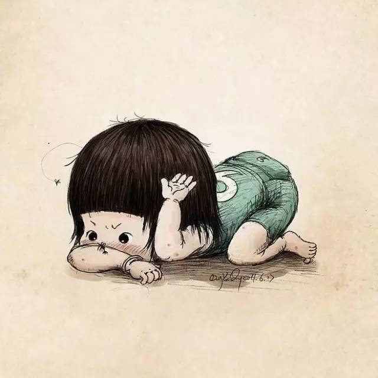
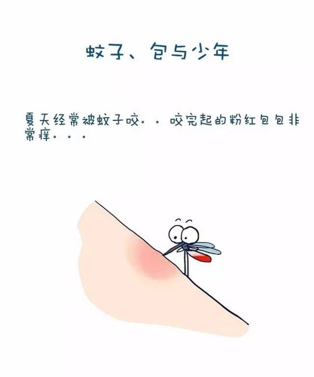
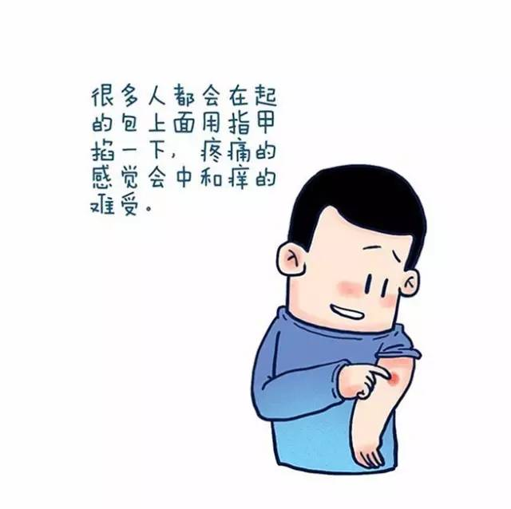
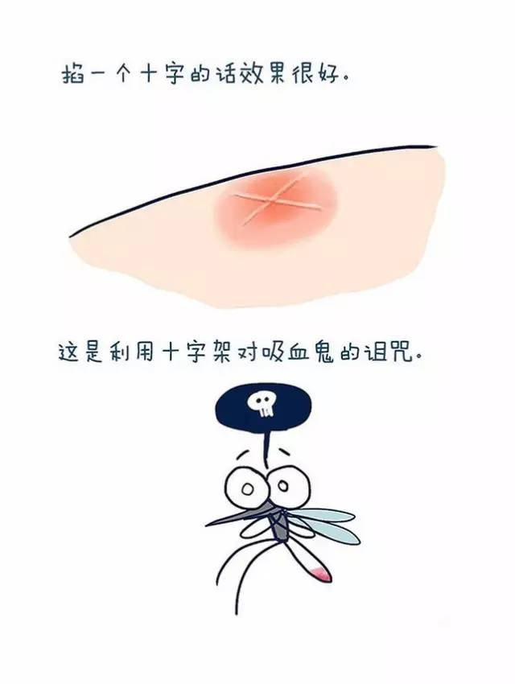
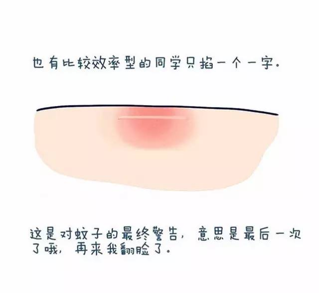
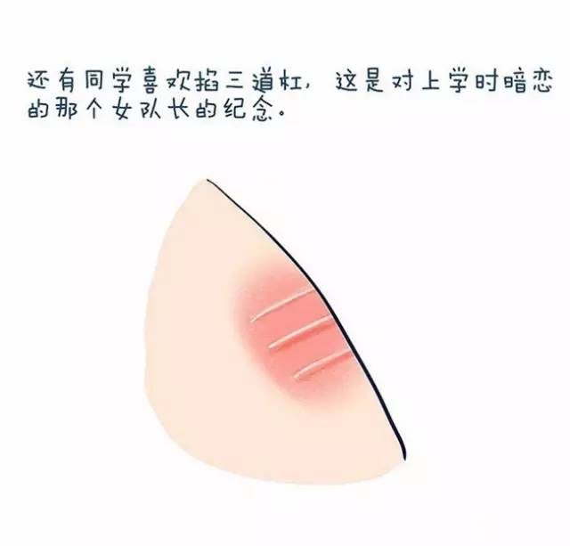
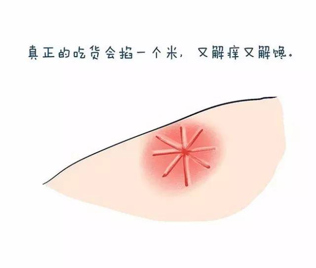
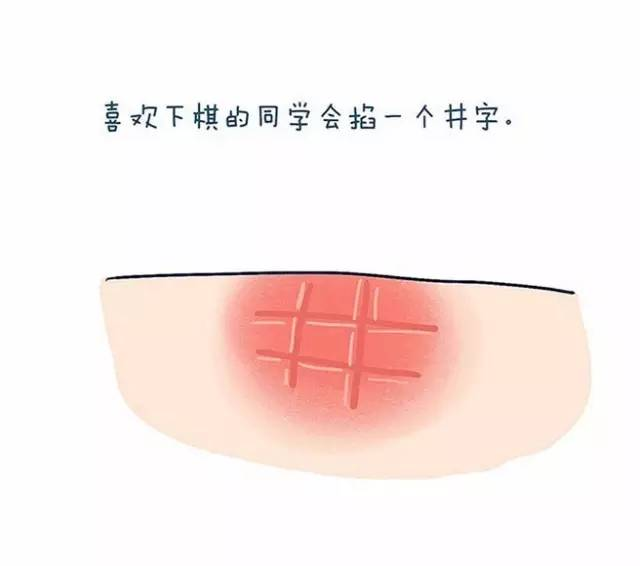
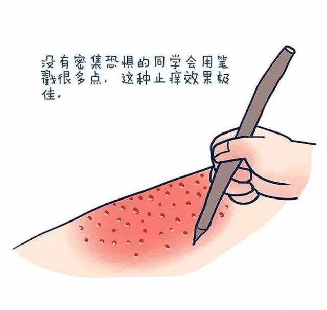
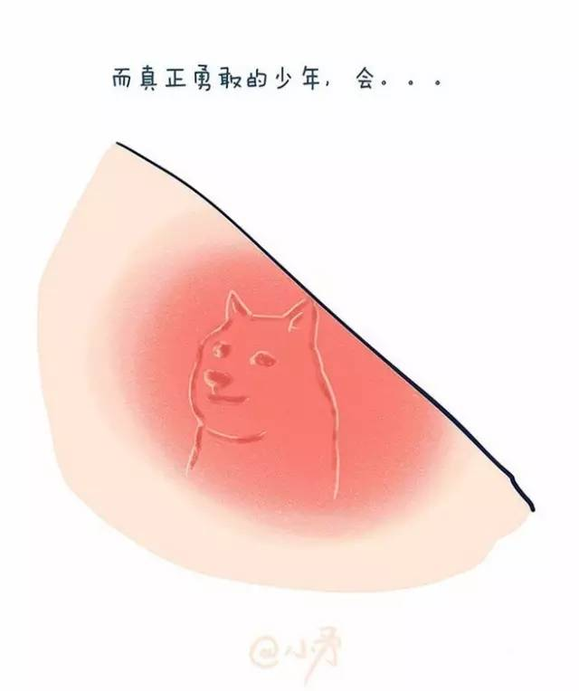

夏日睡不了 处处蚊子咬
 2,357
2,357
夏天到了，又到了蚊子肆虐的时节，略举一些《全唐诗》中和蚊子有关的篇章。

韦应物曾留心观察过琥珀里的一只蚊子标本。
曾为老茯神，
本是寒松液。
蚊蚋落其中，
千年犹可觌。
喜欢观察事物的诗人，还有殷尧藩。他闲着没事，观察过蜘蛛逮蚊子。
鹰拳擒野雀，
蛛网猎飞蚊。
元稹也算一个。他专门写过三首诗咏“浮尘子”。浮尘子是一种非常小的虫，学名叶蝉。元稹发现，浮尘子可以在蚊子的睫毛上安巢。
乍可巢蚊睫，
胡为附蟒鳞。
权德舆也是个科学爱好者，他在一个清静的早晨，仔细观察过蚊子的翅膀，发现上边有一只醯鸡（蠛蠓）。
醯鸡伺晨驾蚊翼，
毫端棘刺分畛域。
可见权德舆的诗虽然算不上一流，视力绝对是一流的。在唐诗中，视力能和权德舆相比的，恐怕只有莎地的一个道士。这是施肩吾记载的。
池边道士夸眼明，
夜取蟭螟摘蚊睫。
同样是方外之士，皎然的视力就不行了。
蟭螟蚊睫察难知。

蚊子睫毛虽小，皮日休却认为雨神可以住在上边。
雨工避罪者，
必在蚊睫宿。
恐怕皮日休是喜欢蚊子的，因为冬天煎茶的声音，都能被他想象成蚊子。
松扉欲启如鸣鹤，
石鼎初煎若聚蚊。
不过，许多诗人认为蚊子的声音并不小，甚至有雷声那么大。比如王起，在和白居易、刘禹锡联句的时候，就这样认为。
蚊聚雷侵室，
鸥翻浪满川。
张祜也说，
雨气朝忙蚁，
雷声夜聚蚊。
张祜诗里的雷声是双关，有实实在在雷。而韩偓笔下，就是明明白白说蚊声如雷了，
不道惨舒无定分，
却忧蚊响又成雷。
“蚊雷”典出《汉书》，是说许多蚊子聚到一起，声音如雷。不过，韩偓这句诗的重点不在蚊子声音大小，而在于他写的是冬天。冬至的时候，竟然都有蚊子。而且并不是在南方，而是在陕西凤翔府。——这也不奇怪，杜甫也有同样的经历。杜甫在通泉县的时候，天不算太冷，而且山中潮湿，依然有蚊虫活跃。
溪行衣自湿，
亭午气始散。
冬温蚊蚋在，
人远凫鸭乱。

张祜、杜甫住的地方冬天都有蚊子，但白居易住的地方夏天都没什么蚊子。
林静蚊未生，
池静蛙未鸣。
景长天气好，
竟日和且清。
当然，夏天有蚊子才是正常的。唐彦谦：
穷居无公忧，
私此长夏日。
蚊蝇如俗子，
正尔相妒嫉。
到了秋天，一般规律是，早秋还有蚊子，秋霁后就没有了。罗隐为此专门写了两首诗。
蝇蚊犹得志，
簟席若为安。
《秋霁后》
蝇蚊渐无况，
日晚自相亲。
不仅人被蚊子咬，马也被咬。李端怜悯被咬的瘦马，他看到城边一群牧马中，有一匹累得走不动了，产生了悲悯的情绪。
往时汉地相驰逐，
如雨如风过平陆。
岂意今朝驱不前，
蚊蚋满身泥上腹。

从地域上看，南方蚊子比北方凶猛。江南蚊子奇多无比。唐朝江南属于瘴疠之地。李白流放南方，杜甫曾写诗叹息过江南的瘴疠。范灯也说过江南蚊子之多：
江南季夏天，
身热汗如泉。
蚊蚋成雷泽，
袈裟作水田。
还有王建：
南中三月蚊蚋生，
黄昏不闻人语声。
天下蚊子，厉害的在南方；南方蚊子，厉害的在四川。四川的蚊子二月就开始咬人了，而且还能咬成疮。白居易：
巴徼炎毒早，二月蚊蟆生。
咂肤拂不去，绕耳薨薨声。
斯物颇微细，中人初甚轻。
如有肤受谮，久则疮痏成。
有次，白居易的朋友要去南方，走之前，白居易拉着他的手郑重地提醒他，我有一件事，不知当说不当说。啥事呢，就是南方条件不好，蚊子太多。
我说南中事，君应不愿听。
……
越多愁善感的人，越容易招蚊子。唐代诗人中被蚊子咬得最惨的是孟郊和元稹，恐怕这和体质有关。孟郊的体质容易招蚊子，而且大概是家里穷，没有蚊帐，半夜正睡得美，被蚊子咬醒了。于是感慨，希望天下人家里都有蚊帐。
五月中夜息，饥蚊尚营营。
……
“幮”，就是类似橱柜形状的帐子。

其实就算蚊子咬不到，声音嗡嗡在耳边也影响睡觉。韦庄：
不寐天将晓，
心劳转似灰。
蚊吟频到耳，
鼠斗竞缘台。
当时还没有蚊香，驱赶蚊子的方法是用扇子。项斯：
蚊蚋已生团扇急，
衣裳未了剪刀忙。
到了秋天，还有蚊子侵袭孟郊。
远客夜衣薄，厌眠待鸡鸣。
一床空月色，四壁秋蛩声。
……
但孟郊的失眠，恐怕不全是因为蚊子，主要还是因为发愁。人越在失意的时候，越容易被蚊子咬。前文说过，白居易有一阵住的地方夏天都没蚊子，但他失意落魄的时候，蚊子照样咬他。
世上方为失途客，
江头又作阻风人。
鱼虾遇雨腥盈鼻，
蚊蚋和烟痒满身。
有同样经验的人还有元稹。元稹被贬之前，住的地方条件还不错，有纱窗，蚊子都被挡在外边了。
蚊声霭窗户，
萤火绕屋梁。
但被贬南方之后就不行了，晚上坐在门口凉快凉快，活动一下胳膊腿儿，顺便还打算想想风月之事，结果先被蚊子饱饱咬了一顿。
夜来稍清晏，
放体阶前呼。
未饱风月思，
已为蚊蚋图。

在元稹下放到四川达州前，白居易就提醒过他当地环境很恶劣，
虫蛇白昼拦官道，
蚊蚋黄昏扑郡楼。
何罪遣君居此地，
天高无处问来由。
等元稹到了四川，发现白居易说的是真的，就寄诗向白居易哭诉，
司马见诗心最苦，
满身蚊蚋哭烟埃。
元稹给白居易的寄诗里有很多都在抱怨蚊子。
艇子收鱼市，
鸦儿噪荻丛。
不堪堤上立，
满眼是蚊虫。
索绠飘蚊蚋，
蓬麻甃舳舻。

元稹和白居易是好基友，白居易有天夜里在江楼逛，吟了元稹的诗，元稹知道后非常开心，回头就写了三十韵的长诗。全诗荡气回肠，写到最后，说做梦老梦见白居易，醒来顾影自怜，最后补了一句，这里蚊子实在太多了。
暗魄多相梦，
衰容每自怜。
卒章还恸哭，
蚊蚋溢山川。
元稹气质忧郁，身体羸弱，在四川生活得很不开心。
蚊幌雨来卷，烛蛾灯上稀。
啼儿冷秋簟，思妇问寒衣。
帘断萤火入，窗明蝙蝠飞。
良辰日夜去，渐与壮心违。
孟郊和元稹，是被蚊子咬得最苦逼的诗人。当然，也有一种可能性，就是别人也招蚊子，但没有他俩爱嚷嚷。比如，张说和刘禹锡，同样被贬南方，但都不像元稹那样抱怨。张说很牛逼，他不仅是诗人，还是政治家、军事家，策论天下第一，当过兵部侍郎，前后三次为相，执文坛牛耳三十年，号称“燕许大手笔”。大手笔的人气魄大，脾气也大。张说不肯党附太平公主，被一贬再贬，贬至岳州刺史。岳州的蚊子又比较凶猛，但张说根本就不嚷嚷，直接用巴掌扇死，扇到最后，衣服上全是蚊子血。
器留鱼鳖腥，
衣点蚊虻血。

刘禹锡也是豪放派。他和元稹一样，被贬到巴蜀，在南方前后共滞留了二十三年。但回到北方，只消听一首歌，就完全治愈了。生性豪放的诗人是不怕蚊子咬的，刘禹锡专门写过一首诗骂蚊子。他愤怒地说，我堂堂七尺汉子，你蚊子才屁大一点儿，只不过仗着蚊多势众，才敢咬我。我就让你们咬，看秋天来了，你们还不被鸟给吃了。
我躯七尺尔如芒，我孤尔众能我伤。
天生有时不可遏，为尔设幄潜匡床。
清商一来秋日晓，羞尔微形饲丹鸟。
我深深地为刘禹锡的科学知识水平感到悲哀——他竟然以为秋天没有蚊子，是因为蚊子被鸟吃了。让刘禹锡很失望的是，到了秋天，他发现还是有蚊子，看来蚊子没有被鸟吃掉。这时，鸟在刘禹锡心目中的形象也毁了。“丹鸟”也变成了“妖鸟”。
撮蚊妖鸟亦夜起，
翅如车轮而已矣。

罗隐的科学知识水平也同样堪忧，难怪他一辈子考不中进士。罗隐的落第次数恐怕在唐人中要排第一。他认为蚊子会吃人的肌肉。
蚊蚋有毒，
食人肌肉。
苍蝇多端，
黑白偷安。
相比之下，韩愈就多一些常识了。韩愈也是豪放派，也被贬南方，却不怕被蚊子咬。他认为秋天没有蚊子，是因为凉风把它们吹跑了。这虽然仍不够科学，但比刘禹锡的见识强多了。
朝蝇不须驱，暮蚊不可拍。
蝇蚊满八区，可尽与相格。
得时能几时，与汝恣啖咋。
凉风九月到，扫不见踪迹。

诗里提到蚊子的虽多，但真正给蚊子以地位，用一首长诗来写蚊子的诗人，除了刘禹锡，还有吴融。吴融把蚊子写得更可怕，说它们令人筋断力枯。
天下有蚊子，候夜噆人肤。
平望有蚊子，白昼来相屠。
不避风与雨，群飞出菰蒲。
扰扰蔽天黑，雷然随舢舻。
利嘴入人肉，微形红且濡。
振蓬亦不惧，至死贪膏腴。
舟人敢停棹，陆者亦疾趋。
南北百余里，畏之如虎驱。
噫嘻天地间，万物各有殊。
阳者阳为伍，阴者阴为徒。
蚊蚋是阴物，夜从喧墙隅。
如何正曦赫，吞噬当通衢。
人筋为尔断，人力为尔枯。
衣巾秽且甚，盘馔腥有余。
岂是阳德衰，不能使消除。
岂是有主者，此乡宜毒荼。
吾闻蛇能螫，避之则无虞。
吾闻虿有毒，见之可疾驱。
唯是此蚊子，逢人皆病诸。
江南夏景好，水木多萧疏。
此中震泽路，风月弥清虚。
前后几来往，襟怀曾未舒。
朝既蒙襞积，夜仍跧蘧蒢。
虽然好吟啸，其奈难踟蹰。
人生有不便，天意当何如。
谁能假羽翼，直上言红炉？
不过，吴融虽然花了260个字来写蚊子，却不及杨鸾的28个字有趣，琅琅上口：
白日苍蝇满饭盘，
夜间蚊子又成团。
每到更深人静后，
定来头上咬杨鸾。
作者 / 凤凰新闻客户端主笔 王路 公众号：i_wanglu，新书《唧唧复唧唧》
图 / 速写本子、小矛